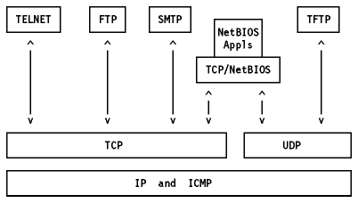
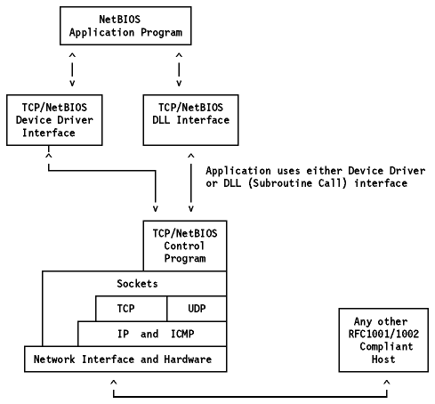

Table of Contents
Table of Contents  DOS
DOSNetBIOS Services Protocol is a standard protocol. Its status is elective.
A relevant application protocol is described in RFCs 1001 and 1002. They describe the standard to implement the IBM NetBIOS services (as described in IBM Technical Reference PC Network) on top of the TCP and UDP protocol layers. Remember that many of today's IBM token-ring applications use the NetBIOS services to communicate over the IBM Token-Ring Network. Examples are the OS/2 LAN Server and the DOS LAN Requester. Among the OEM applications which use NetBIOS services is Lotus Notes.
All of today's NetBIOS applications run on PCs and PS/2s. Implementation of NetBIOS on TCP/IP would bring the power of mini and large computers to the PC user. A typical application would be to use large systems as file servers.
This section gives an overview of the functions of the NetBIOS Kit of TCP/IP V2.0 for OS/2, also known as TCP/NetBIOS.
TCP/NetBIOS enables NetBIOS applications running on OS/2 workstations with IBM TCP/IP to communicate, over a TCP/IP network, with other OS/2 workstations with TCP/IP and TCP/NetBIOS, or other vendor platforms running equivalent RFC 1001 and RFC 1002 compliant TCP/IP support. TCP/NetBIOS does not communicate with native NetBIOS nodes, but users who presently have native NetBIOS networks can operate TCP/NetBIOS networks concurrently on the same local area network. The two NetBIOS networks will be independent and will not communicate with each other.
TCP/NetBIOS is compatible with both IBM's NetBIOS and Microsoft's NetBIOS specifications.
TCP/NetBIOS can be used with any adapter supported by TCP/IP V2.0 for OS/2.
It replaces the NetBIOS support provided with the OS/2 Communications Manager.
NetBIOS application programs remain unchanged, but will now communicate over
TCP/IP instead of directly over a LAN. TCP/NetBIOS is a TCP/IP application but
application programs that interface with TCP/NetBIOS for communications are not
TCP/IP applications because they do not interface directly with TCP/IP.

Figure: TCP/IP and NetBIOS
Two levels of OS/2 interfaces exist for the NetBIOS. An application program
can use a Dynamic Link Routine interface, or a Device Driver interface. An
application program may use either type of OS/2 interface, but cannot use both
interfaces at the same time if it wishes to be considered as a single
application. Resources provided to and resources obtained from one of the OS/2
interfaces cannot be used at the other OS/2 interfaces. In order for an
application program to use a Device Driver interface, the application program
itself must be a device driver or have a device driver as one of its
components. The application program device driver must be set up to support
communication between device drivers. In doing this, the application program
device driver can be called by the NetBIOS for the posting of events.

Figure: NetBIOS Kit of TCP/IP V2.0 for OS/2
NetBIOS provides four kinds of services:
It provides support for:
Verifies that a NetBIOS name is not already being used on the network. The registration process starts with a broadcast, asking the network whether anyone is using the name. A node using the name will answer the broadcast. If no answer is received from the broadcast, NetBIOS can register the name.
Makes sure that once a name is registered, no other node uses the name. The NetBIOS program will respond to a broadcast from another node to prevent the name from being used by the other node.
Finds the network address of a node known by a NetBIOS name only. The network address is usually obtained via a broadcast procedure.
A session is a connection-oriented service used for reliable data transfer. It has three phases:
It is during this phase that the IP address and TCP port of the called name are determined, and a TCP connection is established with the remote party.
Once the connection (session) is established, simple "Send" and "Receive" verbs are provided for data transfer.
The session is closed whenever either a party (in the session) closes the session or it is determined that one of the parties has gone down.
Connectionless services are available through the use of monocast, multicast and broadcast messages. They are used to support low-overhead communications with minimal error checking. NetBIOS datagrams are carried within UDP packets.
They are used to handle unusual situations such as errors.
Both session and datagram services use the logical network names to address recipients.
The RFCs define three modes of operations:
This mode uses broadcast to identify the target node and then establish point-to-point communications between B-nodes. This is the most commonly implemented mode. This covers TCP/IP implemented in environments which support broadcast, particularly Ethernet.
This mode requires the use of a NetBIOS Name Server and a NetBIOS Datagram Distribution Server. These servers are complex and difficult to implement. P-nodes operate in an environment where there are no broadcasts, only point-to-point connections.
M-nodes are the same as P-nodes but with the ability to perform broadcasts.
TCP/NetBIOS supports the B-node class of implementation with some P-node extensions.
The RFCs cover naming conventions:
The scope limits the range of a NetBIOS name in order to avoid conflicts in a large network. The NetBIOS name SCOPE is hidden from the casual user. For example a name JOE in a headquarter network could be internally JOE.HEQ and another JOE in the laboratory could be JOE.LAB, where HEQ and LAB are scope names. The users only need to use the name JOE. The two JOEs cannot communicate because they are in different scopes.
TCP/NetBIOS provides the basic NetBIOS services required for B-nodes and provides some P-node extensions. This allows TCP/NetBIOS to operate through routers and to use TCP/IP domain name servers. The extensions do not alter the protocol as seen by a B-node. The extensions are implemented by two additional files (the BROADCAST file and the NAME file) and the use of the Domain Scope String.
This file is loaded at startup. It contains a list of remote TCP/IP addresses, which the user wants to have included in a broadcast. The addresses are in other networks or subnetworks and can only be reached via routers. This file is needed to extend broadcasts across the router boundaries into other networks because normal broadcasts are limited to a single network. The TCP/IP address can be in dotted decimal format (9.3.124.5) or in domain name format (joe.raleigh.ibm.com). In the latter, a TCP/IP domain name server or a host table will be used to find the 32-bit TCP/IP address.
This file is accessed at each search. New users can be added without restarting TCP/NetBIOS. This file contains a cross reference of NetBIOS names to TCP/IP addresses. The TCP/IP address can be in dotted decimal format (9.3.124.5) or in domain name format (joe.raleigh.ibm.com). In the latter, a TCP/IP domain name server or a host table will be used to find the 32-bit TCP/IP address. The nodes in this file will be contacted in point-to-point mode and will not be included in broadcasts. Typically, this file can be used to access a server whose TCP/IP address is known.
Because of the possibility of operating NetBIOS over a very large and dispersed TCP/IP network, and because NetBIOS names are to be unique, the RFCs specify an expanded form of NetBIOS name. This addition is called the NetBIOS name scope, because it has the effect of limiting the scope of a NetBIOS name. This surname is hidden from the casual user. The idea is that two RFC-compliant NetBIOS nodes can communicate only if they have the same NetBIOS name scope. For example, a NetBIOS name ERNIE may have a scope HQ. The name transmitted on the network will contain both parts of the name, as ERNIE.HQ.
When an application requests NetBIOS to locate a host, that is, to find the TCP/IP address of the NetBIOS name, it uses three algorithms:
Finally, if a match is still not found, the program generates an error message.
An alternative implementation of RFCs 1001 and 1002 is provided in the TCPBEUI component of OS/2 LAN Server V4.0. TCP/IP communications is basically provided in the MPTS support included in LAN Server. This, together with TCPBEUI, provides an implementation of RFC 1001/1002 which is similar to that described earlier for TCP/IP V2.0 for OS/2. Both LAN Server and LAN Requester are able to use this support. Performance is generally better using TCPBEUI than it is using the TCP/NetBIOS support described earlier.
TCP/IP V2.1.1 for DOS offers, as a separately orderable kit, an implementation of TCP/NetBIOS which is similar in terms of function to the OS/2 implementation described in the previous section.
NetBIOS and IPX support for AIX is provided by the product AIX NetBIOS and IPX Support/6000. The product includes industry standard communications protocol support for NetBIOS (NetBEUI), IPX/SPX and RFC 1001/1002. With this you have additional network application programming interfaces to allow you seamless access to existing systems.
 Line
Printer Daemon
Line
Printer Daemon